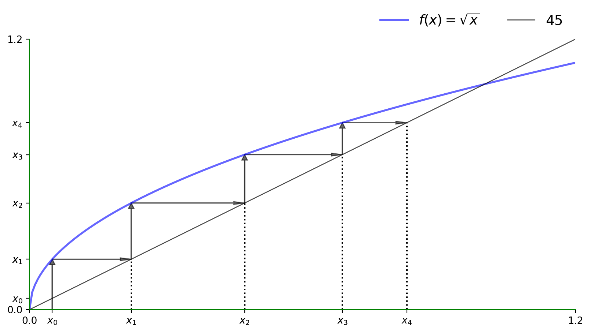
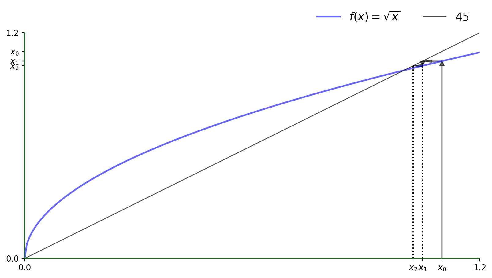
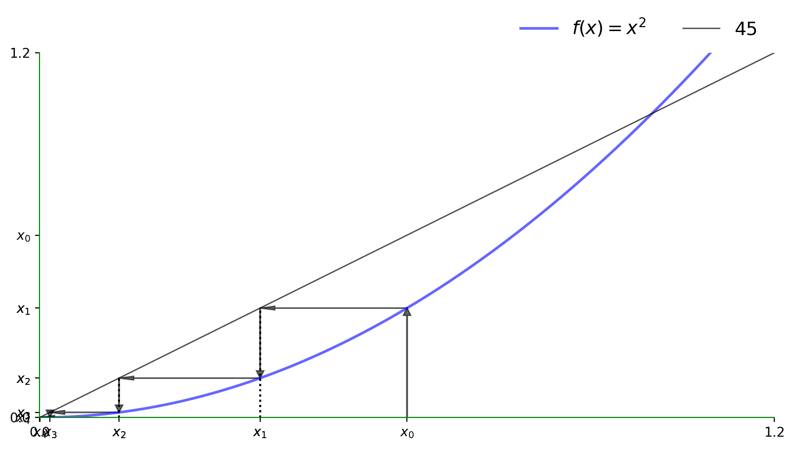
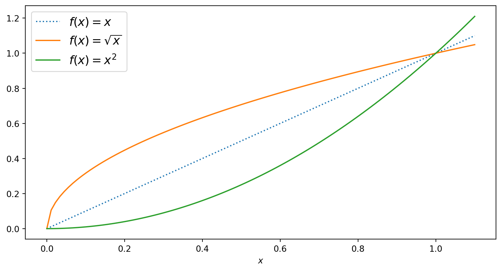
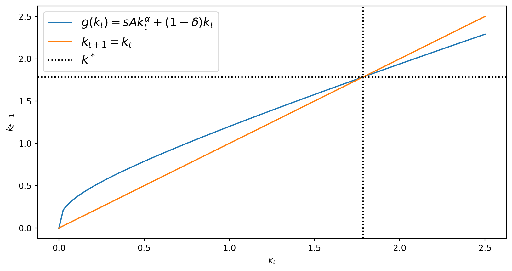
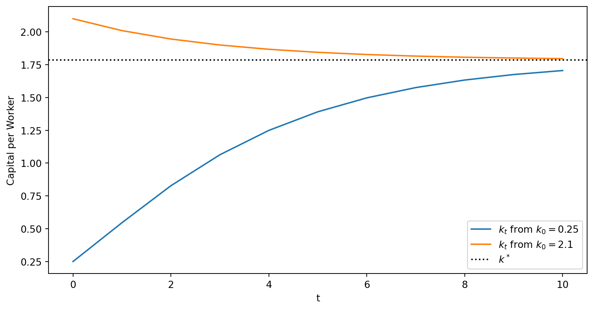

ECON526: Quantitative Economics with Data Science Applications
Linear and Nonlinear Dynamics
Overview
Motivation and Materials
- In this lecture, we will apply some of our tools to non-linear equations, which come up in macroeconomics, industrial organization, and econometrics
- The primary example is a simple version of the growth models
- We will introduce the idea of a fixed point, which has many applications across fields of economics
- A special emphasis will be placed on analyzing stability - which connects to the eigenvalues of the dynamical system
Packages and Other Materials
Some additional material and references
Fixed Points
Fixed Points of a Map
Fixed Point
Let \(f : S \to S\) where we will assume \(S \subseteq \mathbb{R}^N\). Then a fixed point \(x^* \in S\) of \(f\) is one where
\[ x^* = f(x^*) \]
Fixed points may not exist, or could have multiplicity
Fixed Points for Linear Functions
- We have already done this for linear functions.
- Let \(f(x) = \begin{bmatrix} 0.8 & 0.2 \\ 0.2 & 0.8 \end{bmatrix} x\)
- Then we know that \(x^* = \begin{bmatrix} 0 & 0 \end{bmatrix}^T\) is a fixed point
- Are there non-trivial others?
- Could check eigevectors as we did before, \(\lambda \times x = A x\)
- If there is an \((\lambda, x)\) pair with \(\lambda = 1\) it is a fixed point
Fixed Points for Nonlinear Functions
- Consider \(f(x) = \sqrt{x}\) and \(f(x) = x^2\) for \(x \geq 0\)
- Trivially \(x^* = 0\) is a fixed point of both, but what about others?
- Plot the 45-degree line to see if they cross! Seems \(x^* = 1\) as well?
- As we will discuss, though. The shape at \(x^*=1\) and \(x^*=0\) is very different
- Think about what happens if we “perturb” slightly away from that point?
Plot Against 45 degree line
- Consider \(f(x) = \sqrt{x}\) and \(f(x) = x^2\) for \(x \geq 0\)

Interpreting Iterations with the 45 degree line
- To use these figures:
- Start with any point on the x-axis
- Jump to the \(f(\cdot)\) for that point to see where it went
- Go across to the 45 degree line
- Then down to the new value
- Repeat! Useful to interpret dynamics as well as various numerical methods
- Gives intuition on speed of convergence/etc. as well
Evaluating the \(\sqrt{x}\) near \(x=0.05 > 0\)
Evaluating the \(\sqrt{x}\) near \(x=1.1 > 1\)
Evaluating the \(x^2\) for \(x = 0.6 < 1\)
Evaluating the \(x^2\) for \(x = 1.01 > 1\)

Linear Dynamics and Stability
Scalar Linear Model
\[ x_{t+1} = a x_t + b \equiv f(x_t),\quad \text{ given }x_0 \]
\[ \begin{aligned} x_1 &= a x_0 +b\\ x_2 &= a x_1 + b = a^2 x_0 + ab + b\\ \ldots & \\ x_t &= a^t x_0 + b \sum_{i=0}^{t-1} a^i = a^t x_0 + b \frac{1-a^t}{1-a}\\ x^* &\equiv \lim_{t\to\infty}x_t = \begin{cases}\frac{b}{1-a} & \text{ if } |a|<1\\ \text{diverges} & \text{ if } |a| > 1 \text{ or } a=1, b\neq 0\\ \text{indeterminate} & \text{ if } a=1, b=0 \end{cases} \end{aligned} \]
Stability and Jacobians
- Given \(f(x_t) = a x_t + b\)
- The Jacobian (derivative since scalar) \(\nabla f(x_t) = a\)
- Eigenvalues of a scalar are just the value itself, so can write the condition as
- Stable at fixed point \(x^*\) if \(\rho(\nabla f(x^*)) < 1\), where \(\rho(A) = \max_i |\lambda_i(A)|\) the spectral radius
- Saw this as a condition for stability with higher-dimensional linear systems when looking at Present Discounted Values
Linearization and Stability
- Important condition for stability with nonlinear \(f(\cdot)\)
- Intuition: assume \(x^*\) exists and then
- Linearize around the steady state and see if it would be locally explosive
- Necessary but not sufficient. \(\rho(\nabla f(x^*)) > 1 \implies x^*\) can’t be a stable fixed point
- You may see this when working with macro models in Dynare and similar methods in macroeconomics
Linearization
- Assume steady state \(x^* = f(x^*)\) exists, with system \(x_{t+1} = f(x_t)\)
- Take first-order taylor expansion around \(x^*\)
\[ \begin{aligned} x_{t+1} &= f(x^*) + \nabla f(x^*) (x_t - x^*) + \text{second order and smaller terms}\\ x_{t+1} - x^* &\approx \nabla f(x^*) (x_t - x^*)\\ \hat{x}_{t+1} &\approx \nabla f(x^*) \hat{x}_t \end{aligned} \]
- Where the last formulation is common in macroeconomics and time-series econometrics. \(\hat{x}_t\equiv x_t - x^*\) is the deviation from the steady state
- For the linear case, these would all be exact as there are no higher-order terms
Quality of Linearization
- Gives approximate dynamics for a perturbation close to the steady state
- May have good approximation far away from \(x^*\) if \(f(\cdot)\) is close to linear
- May have terrible approximations close to \(x^*\) if \(f(\cdot)\) highly nonlinear/asymmetric
- Often log-linearization is used instead, which expresses in percent deviation
Plot Against 45 degree line Reminder
Stability of \(\sqrt{x}\) and \(x^2\)
Recall that both had fixed points at \(x^*=0\) and \(x^*=1\)
Lets check derivatives! Let \(f_1(x) = \sqrt{x}\) and \(f_2(x) = x^2\)
- \(\nabla f_1{x} = \frac{1}{2\sqrt{x}}\) and \(\nabla f_2(x) = 2x\)
Check spectral radius of the Jacobians (trivial since univariate) at the fixed points:
- At \(x^* = 0\), \(\nabla f_1(0) = \infty\) and \(\nabla f_2(0) = 0\)
- At \(x^* = 1\), find \(\nabla f_1(1) = \frac{1}{2}\) and \(\nabla f_2(1) = 2\)
Interpretation:
- \(f_1(x)\) is locally explosive at \(x^*=0\) and locally stable at \(x^*=1\)
- \(f_2(x)\) is locally stable at \(x^*=0\) and locally explosive at \(x^*=1\)
Solow-Swan Growth Model
Model of Growth and Capital
- An early growth model of economic growth is the Solow-Swan model
- Simple model. Details of the derivation for self-study/macro classes:
- \(k_t\) by capital per worker and \(y_t\) is total output per worker
- \(\alpha \in (0,1)\) be a parameter which governs the marginal product of capital
- \(\delta \in (0,1)\) is the depreciation rate (i.e., fraction of machines breaking each year)
- \(A > 0\) is a parameter which governs the total factor productivity (TFP)
- \(s \in (0,1)\) is the fraction of output used for investment and savings
Capital Dynamics
Then capital dynamics follow a nonlinear difference equation with steady state
\[ \begin{aligned} y_t &= A k_t^{\alpha}\\ k_{t+1} &= s y_t + (1-\delta)k_t = s A k_t^{\alpha} + (1-\delta) k_t \equiv g(k_t)\quad \text{ given }k_0\\ k^* &\equiv \left(\frac{s A}{\delta}\right)^{\frac{1}{1-\alpha}} \end{aligned} \]
Implementing the Solow-Swan Model
k_1 = g(k_0) = 0.546,k_2 = g(g(k_0)) = 0.828
k_star = 1.785Plotting \(k_t\) vs. \(k_{t+1}\) verifies our \(k^*\)
Jacobian of \(g\) at the steady state
\[ \begin{aligned} \nabla g(k^*) &= \alpha s A k^{*\alpha-1} + 1-\delta,\quad \text{ substitute for } k^*\\ &= \alpha s A \frac{\delta}{s A} + 1-\delta = \alpha \delta + 1 - \delta\\ &= 1 - (1-\alpha)\delta < 1 \end{aligned} \]
- Key requirements were \(\alpha \in (0,1)\) and \(\delta \in (0,1)\)
- The spectral radius of a scalar is just that value itself.
- The spectral radius of \(||\nabla g(k^*)|| < 1\), a necessary condition for \(k^*\) stable
- Aside: macroeconomics, industrial organization, etc. this is related to contraction mappings and Blackwell’s condition
Simulation
Capital Transition from \(k_0 < k^*\) and \(k_0 > k^*\)
X_1 = simulate(g, X_0, T) # use with our g
X_2 = simulate(g, np.array([2.1]) , T)
fig, ax = plt.subplots()
ax.plot(range(T+1), X_1.T,
label=r"$k_t$ from $k_0 = 0.25$")
ax.plot(range(T+1), X_2.T,
label=r"$k_t$ from $k_0 = 2.1$")
ax.set(xlabel="t", ylabel="Capital per Worker")
ax.axhline(y=k_star, linestyle=':',
color='black',label=r"$k^*$")
ax.legend()
plt.show()
Trajectories Using the 45 degree Line

PageRank and Other Applications
Network of Web Pages
- Consider \(A, B, C, D\) as a set of web pages with links given below
Create an Adjacency Matrix
- We can summarize the network of web pages with \(1\) or \(0\) if there is a link between two pages. Pages won’t link to themselves
- This is in (arbitrary) order: A, B, C, D
\[ M = \begin{pmatrix} 0 & 1 & 1 & 0 \\ 0 & 0 & 1 & 1 \\ 1 & 0 & 0 & 1 \\ 1 & 1 & 0 & 0 \end{pmatrix} \]
PageRank Algorithm
One interpretation of this is that you can
- Start on some page
- With equal probability click on all pages linked at that page
- Keep doing this process and then determine what fraction of time you spend on each page
Probabilistic Interpretation
Alternatively,
- Start with a probability distribution, \(r_t\) that you will be on any given page (i.e. \(r_{nt} \geq 0\) and \(\sum_{n=1}^4 r_{nt} = 1\))
- Iterate the process to see the probability distribution after you click the next links
- Repeat until the probability distribution doesn’t change.
Adjacency Matrix to Probabilities
- To implement, we want to put the same probability on going to any link for a given page (i.e. each row)
\[ S = \begin{pmatrix} 0 & 0.5 & 0.5 & 0 \\ 0 & 0 & 0.5 & 0.5 \\ 0.5 & 0 & 0 & 0.5 \\ 0.5 & 0.5 & 0 & 0 \end{pmatrix} \]
Probabilities Evolution
- Now, we can see what happens after we click on a page
- For a given \(r_t\) distribution of probabilities across page, I can see the new probabilities distribution as
\[ r_{t+1} = S^{\top} r_t \]
- Motivation to learn more probability and Markov Chains (next set of lectures)
Fixed Points and Eigenvectors
- What is a fixed point of this process?
- Eigenvector of \(S^{\top}\) associated with \(\lambda = 1\) eigenvalue!
- The real PageRank is a little more subtle (adds in dampening) but the same basic idea
- Learn numerical algebra to use in practice. It is infeasible to actually compute the eigenvector of a huge matrix with a decomposition.